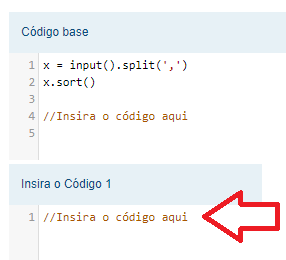

Material de apoio para a disciplina Linguagem de Programação da UACSA/UFRPE
Produzido pelo prof. João Pimentel
A atividade 6 tem dois tipos de problemas: "Única Escolha" e "Complete o Código".
Os problemas de "Única Escolha" são os tradicionais quiz, onde são exibidas várias opções e você precisa escolher a opção correta.
Já os problemas de "Complete o Código" são parecidos com os problema a que já estamos acostumados do The Huxley, mas em vez de criarmos o programa inteiro só iremos complementar o código que é fornecido junto ao enunciado. Veja um exemplo no próximo slide -->

Na sua tela irá aparecer o código base e, abaixo, tem assim: "Insira o Código 1". É nessa parte de baixo que você irá escrever a sua resposta.Nãaaao, essa é a vantagem de usar uma ferramenta de correção automática: você irá saber imediatamente que tem algum problema no código, e poderá corrigir.
Pode enviar errado quantas vezes quiser, o que vale é a última versão